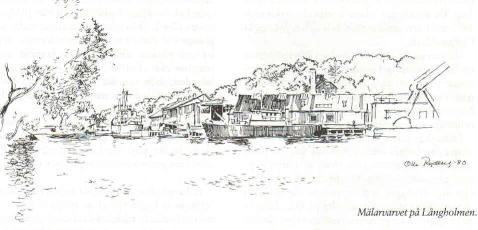
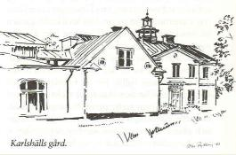
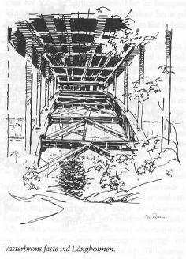

Södermalm i tid och rum
Ur Se på Söder, Olle Rydberg, 1986En fängslande ö
Bryggaren Joachim Ahlstedt lät på 1660-talet uppföra en malmgård, Alstavik, på Långholmens då kala bergsknallar. Byggnaden kom att leva vidare under mindre angenäma former än vad byggherren hade kunnat tänka sig. På 1720-talet kom stället sålunda att användas som arbetsanstalt för bland annat "lösaktiga kvinnor". Steril, ogästvänlig, med sina nakna hällar och nästan obebyggd, ansågs Långholmsmiljön passande för ändamålet.
Vägen till att bli ett regelrätt fängelse var därefter kort. En tid vistades såväl män, kvinnor som barn i den efterhand vidgade anläggningen. Den övergick helt till fängelse för män, sedan det kvinnliga klientelet överförts till Barnhuskvarteret på Norrmalm, där de fick spinna vidare. Barnen hade redan tidigare flyttats dit. Också männen fick arbeta med textil, först i den fabriksbyggnad som kom till på 1770-talet, anknuten till Alstaviksdelens västra sida. Den ändrades vid 1800-talets mitt om till sjukhus. Vidare utbyggnad av fängelset skedde efter hand under 1800-talet. Beklämmande var utformningen av de ekerformade rastgårdarna, där var och en i sin klyfta fick lufta lungorna i trånga, muromgärdade utomhuskorridorer, som avsmalnade mot fängelsebyggnaden. Inte ens himlen gick fri, då taket var täckt med hönsnät.
Fångarna fick arbeta i bomullsfabriken på Reimersholme, men också i Wicanders korkfabrik på Brännkyrkagatan. Straffarbete av gammalt känt slag utfördes vid stenbrottet, vars lämningar vi ser öster om Västerbron mitt på ön. Där knackades gatsten till Stockholms innerstad. Livet var hårt för alla, men värst för de grövsta brottslingarna med straffarbete. Men vi har tjuvar, banditer och andra ogärningsmän att tacka för den grönska som nu frodas på Långholmens hällar. För att förmänskliga den karga naturen lät man nämligen täcka bergen på 1870-talet. Fångar transporterade hit jord, muddrad från Barnhusviken. Ett intensivt planerings och planteringsarbete gav därefter det resultat vi idag kan glädja oss åt när vi vandrar i skuggan av välväxta lindar och andra lövträd på den gamla fängelseön. Knäckepilarna som doppar sina slöjor i Pålsundets vatten har nog ett mera naturvuxet ursprung och sprids genom lossnade kvistar som fastnar i strandkanten. Från början inplanterade, uppträder de lite varstans kring stadens stränder.
Förutom det dystra, nu mer eller mindre rivna centralfängelset, har Långholmsvarvet satt sin prägel på ön. Kajanläggningar, slip, magasin, verkstadshus, kontor och bostadshus har ännu kvar en meningsfull existens på Långholmen. Trots att aktiviteterna på varvet är borta finns reparationsverkstaden kvar. Vi kan vid kajerna fortfarande se anhopningar av mindre fartyg som håller miljön levande. Varvet är Södermalms sista, fortfarande fungerande större verkstadsindustri.

Ända från 1685 har Långholmen haft plats avsedd till varv. När stadens hamnförvaltning tog över ägdes det av Transportbolaget, som där tillverkade och reparerade bogserbåtar. Det var inte så länge sedan man såg de små energiska bogserarna stationerade vid slussbasen, eller dragande 20 000-tonnare till förankringsplats på Strömmen. Karaktäristiskt var deras gulbrämade TB-skorstenar. TB-bolaget drev också fram till 1940-talet Sätra varv mitt emot Kungshatt. Där byggdes och reparerades pråmar. Gatukontoret har sedan 1980 förvaltat Långholmsvarvet, nu benämnt Mälarvarvet. Bland annat har verkstaden framställt Lars Erik Falks kontroversiella skulptur "Färgtorn" på Lindhagensplan. Varvet har annars beställningar på broreparationer, fjärrvärmeledningar, färjramper och liknande uppdrag. Ett förnämligt arbete levererade verkstaden 1977 med den restaurerade och delvis nybyggda Djurgårdsbron.
Vid varvsområdet intill bron över Pålsundet finns ett litet stenhus med lustiga små ventilationsöppningar i källarnivån. Det kallas Fördärvet. Gissar någon att där varit krog, så är det alldeles riktigt. Namnet är talande och hör hemma under samma ordning som Pungpinan och Sista Styfvern.
Pålsundes västra del har också anknytning till sjöfart. Här håller Göta segelsällskap till. Om våren rustas småbåtsägarnas kära klenoder före sjösättningsproceduren. Det putsas, fejas, tätas och målas. Här dras flytetygen upp om hösten, när kyla och mörker sätter stopp för utfärder på sjön. Båtarna pallas upp och får vinterpresenningen över däcket. Sedan är det tyst och dött på uppläggningsplatsen tills vårsolen åter börjar tina upp geggamoja på marken. Nere vid Pålsundet var det som Erik Asklund med sina kompisar levde bus på 1920-talet.
Planerna för Långholmens framtida bruk har länge legat i stöpsleven utan att särskilt mycket har blivit gjort. Bland omskaparna fanns idéer att här anlägga ett tivoli à la Gröna Lunds, med karuseller, dansbanor och allt vad som till dylika nöjesetablissemang hör. Men det enda i nöjesväg som kommit till är amfiteatern ovanför varvsområdet. Nu är man inställd på att arrangera den gamla fängelseön till ett attraktivt friluftsområde. Det som inte rivs av fängelsebyggnaderna skall kunna utnyttjas till vandrarhem. Stallbyggnaden Gamla Fyrkanten, strax innanför Suckarnas bro är K -märkt. Den blir förhoppningsvis sparad åt eftervärlden. Inbakad i centralfängelsets mittparti finns rester av bryggaren Joachim Ahlstedts malmgård, vilken enligt planerna skall bevaras.
Från båtklubben leder vägen förbi det gröna Villa Villekulla-liknande Sofieberg med arkitektur från snickarglädjens tid. En liten stig går runt västligaste udden med utblickar mot Essingeleden och inloppet mot Stockholm. En majkväll 1892 inträffade här ute på Långholmen den tragiska händelse som satte punkt för en lysande teknikers levnadsbana. Konstruktören av den gamla Katarinahissen och Brunkebergstunneln, Knut Lindmark, "begav sig till yttersta udden av Långholmen och tog sitt liv". Medan Katarinahissen blev en succe, blev tunneln ett fiasko, rent ekonomiskt.
|
En som klarade sin ekonomi med glans var brännvinskungen Lars Olsson Smith. På en terrass ovan farleden ligger Karlshälls gård från 1838, som senare blev L O Smiths sommarnöje under hans glansperiod. Han lät bygga det egendomliga "kapellet" på gården, som ingalunda kommit till av religiösa skäl. Det är i själva verket byggt till biljardsal, även om det också användes för att musicera i. Gården är numera rehabiliteringshem för narkomaner. |
 |
Strax söder om Karlshälls gård har ett par väldiga rullstensblock bildat en grottliknande passage, som skulle ha fått Carl von Linne att utgjuta en lång ramsa om perpendikulära väggar och naturkrafternas spel.
På Långholmens norra sida mellan Karlshäll och Västerbron ligger Sjötullens byggnad från 1700-talet, inbäddad i trädgårdsland med några kolonistugor inpå. Närmare fängelseområdet står Stora Henriksvik, ett gulmålat hus med anor från samma sekel. Då bodde tullskrivare i huset. På höjden norr om fängelset, i en trivsam villa väl synlig från Västerbron, bodde fängelsedirektören. Jag gissar att inbrottstjuvar höll sig undan denna frestelse.
Lust och olust
Västerbron var för sin tid ett imponerande verk, som ingen då tänkte sig skulle komma att överträffas av andra stockholmsbroar. Men jättelika Essingeleden krympte 1930-talets storebro till lillebro. Via Västerbron har sedan invigningen 1935 miljontals människor korsat Långholmen med bil, buss eller som förr, med spårvagn fyra eller åtta. Jämförelsevis få har stannat på ön för rekreation. Många har tvångsmässigt vistats här - i det nu nedlagda fängelset.
Spårvagn åtta och fyra var Stockholms verkliga turistlinjer, som gick i ringlinje runt nästan hela stan. Färden över Västerbron bjöd resenären på ett fantastiskt stockholmspanorama. Från Norr Mälarstrand, Klara, Riddarfjärden och Gamla Stan svepte blicken över Katarinaberget, Maria och Skinnarviken till Högalid. Utsikten finns för all del kvar, men varken bil eller buss skänker samma lugna utblick som de stadiga spårvagnarna gav.
Var finns ett skönare bildband att projicera på näthinnan! Ett sceneri smyckat med färgskiftande fasader, gavlar, tak och torn, omslutna av det växelspel som himmel och vatten tonar fram under dygnets gång genom årstidernas variationer.
Långholmen har sina behag och kommer att bli än mer attraktivt allt eftersom de mörka spåren från fängelsetiden suddas ut. Några ställen kommer ändå att leva vidare med olust. Nog är det ruggigt att gå mellan pelarna under Västerbrons mörka, tunga och bullriga tak, som förlorar sig in i berget. I det ofruktsamma torra dammet spirar ingen grönska. Här råder en dyster, skuggad gråsuggevärld i harmoni endast med en djupt deprimerad själ.
Ett annat ställe som ger mig olustkänslor är den trånga strandpassagen nedanför Karlshälls norrvända, murriga stenmur. Gastkramande skrämselfantasier spelar upp för mitt inre när jag tänker på hur det skulle kännas att vara på rymmen undan förföljare och hamna i den här fällan.
Västerbrons spännande spann
-På udden mellan Långholmens herr- och dambad på holmens nordöstra del sparkade vi boll, berättar en mogen Södergrabb, som var ung på 1930-talet.
- Det var ingen lagtävling med målskjutning, därtill var marken för kuperad. Vi sköt bara mot varandra, dribblade och passade, hela tiden med risk att bollen skulle flyga ut i Riddarfjärden. Vilket minsann också hände. En oskriven lag var att den som orsakade malören fick lov att hämta upp bollen ur sjön. Det var bara att hoppa i, oavsett vattnets temperatur. Ett trick var att rikta bollen mot någons smalben så att studseffekten gav bollen skjuts ut från land.
|
 |
Med Västerbrons tillkomst fick vi ett spännande mål för vår äventyrslystnad. Att cykla, promenera, åka bil
eller spårvagn över bron var helt ointressant.
Nej, vi roade oss med att klättra på själva brospannen. Att ta sig över avspärrningen vid brofästet var inte så
svårt. Mardrömslikt nervpirrande var det emellertid att ta sig runt de tjocka stödpelarna. Det gällde att inte
missa fotfästet på andra sidan. Uppför fanns chansen att backa tillbaka vid första pelaren. Nedför var vi
tvungna att ta oss förbi hindren om vi inte skulle bli kvar. Högt uppe under brobanan lade vi oss över balken och vinkade åt söndagsseglarna djupt därinunder. Folk stirrade skräckslagna upp mot oss ungar och åt vårt vanvettiga tilltag. I spannen finns, eller i varje fall fanns, öppningsbara luckor som vi kunde klättra in genom. Sedan gick det faktiskt att hukande promenera upp- och nedför dessa dunkla gångar med metallväggar. Vi hittade också strömbrytare till belysning. Genom ventilationshål var det fin utsikt över Riddarfjärden eller Mälarinfarten. Vi fantiserade om att vara i en fästning med skottgluggar för att försvara Stockholm mot fienden. |
Mycket vatten har runnit under bron sedan dess och vi får hoppas att dagens ungar avstår från den livsfarliga leken på Västerbron.